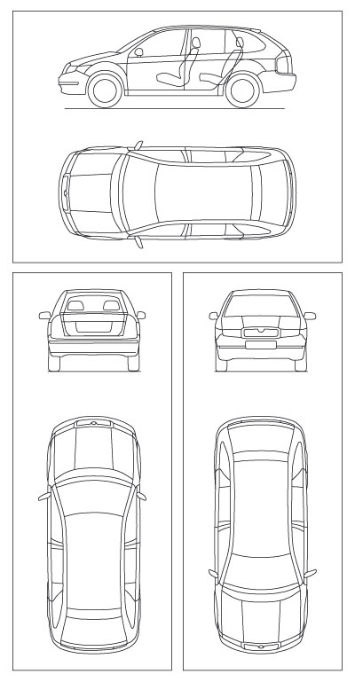
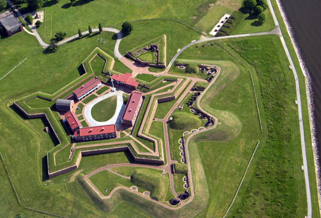

|
A geometria descritiva é o ramo da geometria que estuda a representação
de objetos tridimensionais em duas dimensões através de um certo conjunto específico
de procedimentos.
As técnicas resultantes são importantes para a engenharia,
a arquitetura, o design gráfico e as artes.
A base teórica para a geometria descritiva é fornecida pelas projeções ortogonais.

Ilustração: projeções ortogonais de um modelo de um carro.
O matemático francês Gaspard Monge (1746-1818) é considerado fundador da geometria descritiva.
Ele a usou em engenharia militar (construção de fortificações) durante a época de Napoleão Bonaparte.
De fato, geometria descritiva já foi considerada um segredo militar.
Dennis Lieu e Sheryl Sorby, no excelente livro Visualization, Modeling, and Graphics for Engineering Design,
apresentam o contexto histórico:
|
“A pólvora começou a ser usada no mundo ocidental
durante o Renascimento,
assim como o canhão. Os canhões tornaram obsoletas a maioria das fortalezas
construídas durante a era medieval.
As muralhas não conseguiam suportar o impacto dos projéteis de canhão.
Assim, as fortalezas precisavam ser remodeladas para suportar
os tiros de canhão.
Na França, um novo estilo de fortificação mais resistente foi então desenvolvido.
A fortificação era construída com muros inclinados
que ajudavam a defletir o tiro de canhão e não desmoronavam
da mesma maneira que as muralhas planas verticais, quando atingidas diretamente.
As novas fortalezas eram geometricamente mais complicadas de se construir
do que suas predecessoras com muralhas verticais.
Mais ainda, o perímetro da fortaleza evoluiu de um formato simples retangular
para um formato pentagonal com uma extensão proeminente em cada ápice.
Este formato de perímetro e o uso de muros inclinados resultaram
em paredes que se justapunham em ângulos não usuais, os quais não podiam
ser medidos facilmente ou diretamente.
[...]
Felizmente, os franceses tinham Gaspard Monge,
que desenvolveu uma técnica de análise gráfica chamada geometria descritiva.
[...]
As técnicas de geometria descritiva permitiram
que os engenheiros da época criassem qualquer
ponto de vista de um objeto geométrico a partir
de dois pontos de vista existentes.
Ao criar o ponto de vista apropriado, os engenheiros podiam observar e medir
os atributos de um objeto.
[...]
A geometria complexa, os ângulos de interseção incomuns,
e a altura das muralhas tinham a intenção de maximizar
o fogo cruzado sobre um inimigo em aproximação
sem revelar o interior da fortaleza.
[...]
A astúcia dos franceses
na construção de fortificações manteve a França
como o principal poder europeu até
o século XVIII.
Na época, a geometria descritiva era considerada um segredo do estado francês,
cuja divulgação era crime punível com a morte.
Como resultado da aliança entre a França e o recém-constituído Estados Unidos,
muitas fortificações dos EUA utilizaram projetos franceses.
Como exemplo, temos o Forte McHenry que foi construído em 1806 e é primorosamente
preservado em Baltimore, Maryland.
O Forte McHenry sobreviveu ao bombardeamento inglês durante a Guerra de 1812
e tem importância porque ele inspirou Scott Key a escrever The Star Spangled Banner,
o hino nacional dos EUA.”
Observação: o Capítulo 1 do livro Visualization, Modeling, and Graphics for Engineering Design de Lieu e Sorby está disponível gratuitamente (mediante um registro)
aqui.

Foto: Forte McHenry (IAN Image and Video Library).
|
|